Sidan uppdaterad i dag 14:19 · Senaste rapporten · Artikelarkiv
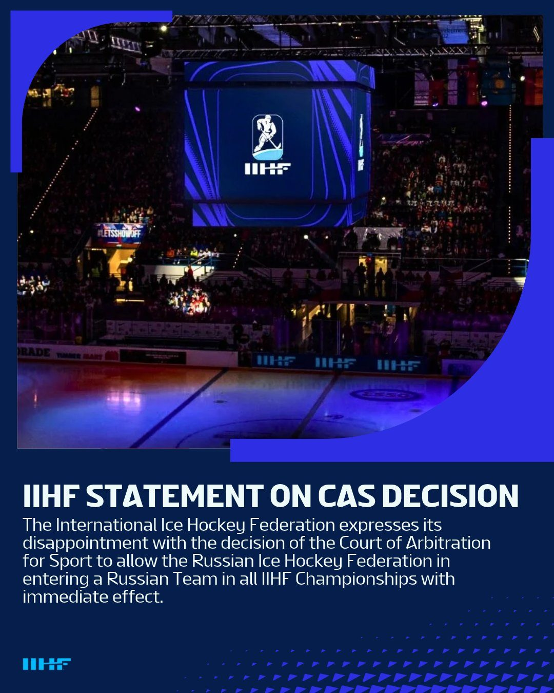
Sport Delvis obekräftatIdrottens skiljedomstol släpper in Ryssland i hockey-VM – IIHF besviket, krav på bojkott
Idrottens skiljedomstol CAS har beslutat att Internationella ishockeyförbundet måste låta Rysslands landslag delta i sina mästerskap redan den här säsongen, med JVM i Edmonton och herr-VM 2027 i Tyskland. IIHF säger att det är besviket men följer domen, medan flera europeiska förbund protesterar och krav på bojkott hörs i Sverige.
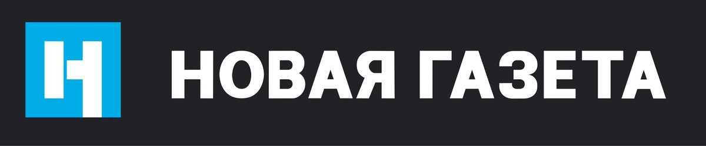
Världen Delvis obekräftat"Vi har blivit dödade" – Novaja Gazeta lägger ner efter 30 år under press
Den ryska oberoende tidningen Novaja Gazeta upphör den 9 november. Redaktionen skriver att påtryckningar från myndigheter och säkerhetstjänster har gjort det omöjligt att fortsätta. Beskedet kommer dagen efter att tidningen tvingats lämna sin redaktion i Moskva, där den funnits i 29 år.
 Sverige Delvis obekräftat
Sverige Delvis obekräftat Storbritannien stänger gränsen för Andreas Malm – svenske klimatforskaren nekas inresa
Den svenske klimatforskaren och författaren Andreas Malm har nekats inresa i Storbritannien. Enligt brittiska myndigheter är hans närvaro "inte förenlig med allmänhetens bästa". Han skulle ha talat i London tillsammans med en av grundarna till den terrorstämplade gruppen Palestine Action.
AI och tech ObekräftatStängd dörr hos Anthropic – kinesiska AI-labb uppges ha bytt till OpenAI:s modell
DeepSeek och Moonshot AI ska ha tränat sina senaste modeller på svar från OpenAI:s GPT-6 Astra, sedan Anthropic gjort det mycket svårare att kopiera Claude. Uppgifterna kommer från The Information och har inte kommenterats av bolagen.
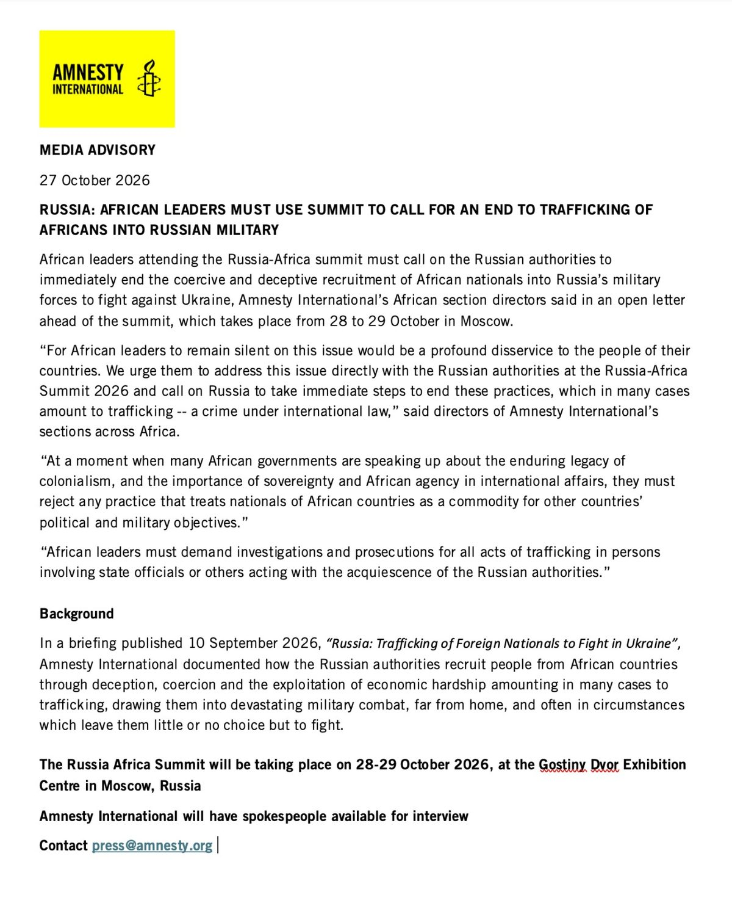
Världen Delvis obekräftatLockade med jobb, skickade till fronten – Rysslands rekrytering i Afrika i fokus under toppmötet
Medan afrikanska ledare samlades i Moskva för toppmötet mellan Ryssland och Afrika växte bevisen för att tusentals afrikaner lurats eller tvingats ut i kriget mot Ukraina. FN-utredare talar om människohandel, och Kenya pekas ut som den största källan.
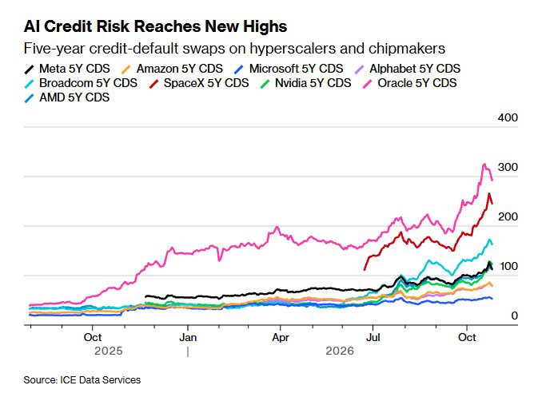
AI och tech Delvis obekräftatPengarna till AI-bygget blir dyrare – nu kan Nvidia gå in som garant
AI-bolagen har lånat omkring 460 miljarder dollar i år för att bygga datacenter. Nu visar en granskning från Bloomberg att räntorna stiger snabbt och att banker och försäkringsbolag närmar sig gränsen för hur mycket mer de vill ta på sig. Nu uppges Nvidia förhandla om att garantera miljardlån åt molnbolaget Nscale för ett datacenter som ska användas av Anthropic.
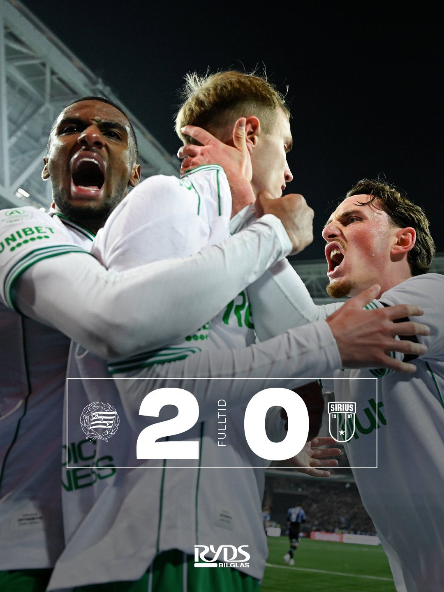
SportHammarby slog Sirius 2–0 – nu skiljer bara tre poäng i guldstriden
Hammarby vann toppmötet mot serieledarna IK Sirius med 2–0 på 3Arena. Victor Lind på straff och Paulos Abraham gjorde målen, och nu skiljer det bara tre poäng mellan lagen med fyra omgångar kvar. Straffen är omdiskuterad.
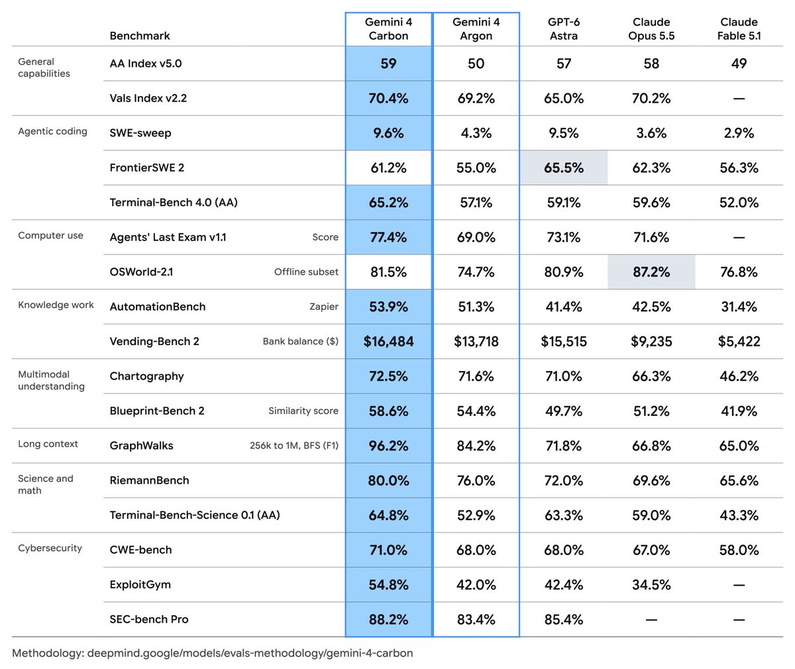
AI och tech Delvis obekräftatGoogle tar täten igen – Gemini 4 Carbon toppar AI-listorna men nästan ingen får prova
Bara två veckor efter förra modellen har Google släppt Gemini 4 Carbon, som nu leder det oberoende Artificial Analysis-indexet med en poängs marginal. Men modellen lämnas först bara ut till utvalda cyberförsvarare, och testerna visar att den inte är bäst på allt.
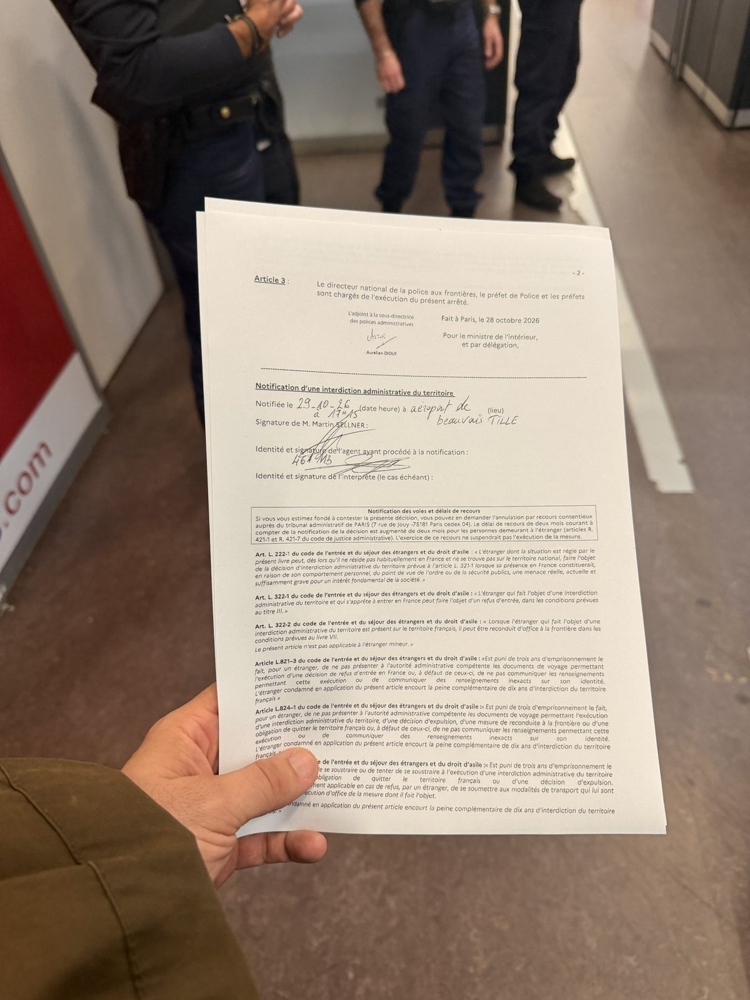
Världen Delvis obekräftatFrankrike stoppar Martin Sellner på flygplatsen – remigrationskonferens förbjuden
Den österrikiske högerextreme aktivisten Martin Sellner nekades inresa vid flygplatsen i Beauvais när han skulle presentera sin bok i Paris. Samtidigt har franska myndigheter förbjudit en konferens och en demonstration om "remigration" under helgen.
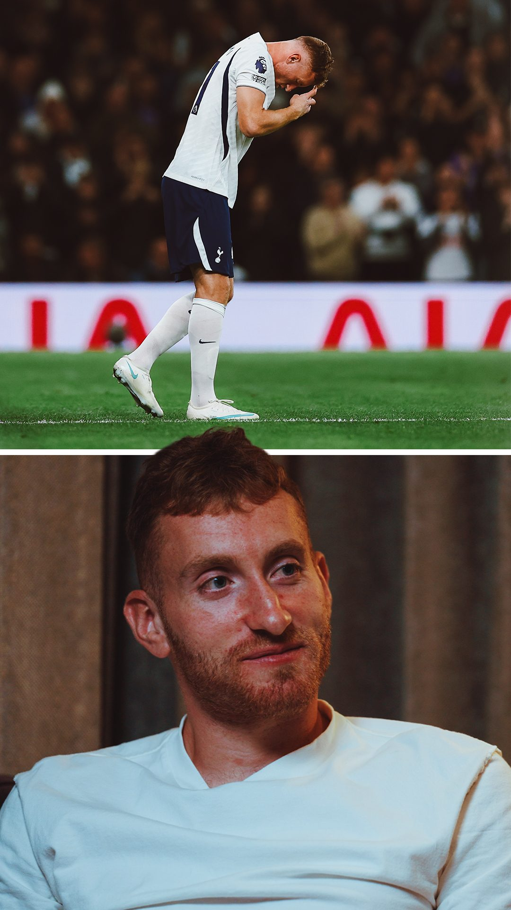
Sport"Jag fick förbereda mamma" – Kulusevski berättar om de 526 dagarna borta
Dejan Kulusevski var borta från fotbollen i 526 dagar efter en knäskada som han själv trodde kunde avsluta karriären. Nu är han tillbaka i Tottenham och berättar öppet om brosket som lossnade, Europa League-finalen på kryckor och samtalet med sin mamma.
 Sverige Delvis obekräftat
Sverige Delvis obekräftat Talmannen bryter tystnaden – C-ledaren prövas som statsminister på tisdag
Talman Andreas Norlén har gett besked: riksdagen ska rösta om C-ledaren Elisabeth Thand Ringqvist som statsminister på tisdag klockan 13. Beslutet får skarp kritik från flera partiledare, och på X tolkas det som ett sätt att snabba på vägen mot antingen en lösning eller ett extraval.
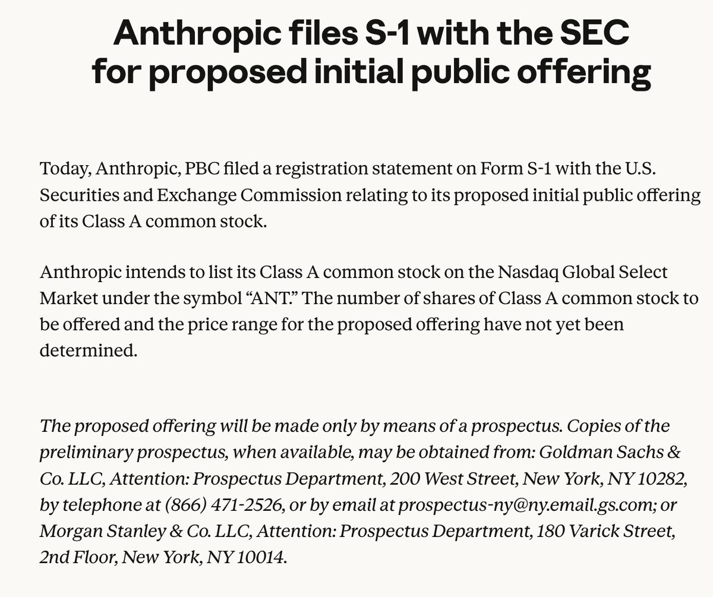
AI och tech Delvis obekräftatAnthropic öppnar böckerna inför börsen – enorm tillväxt, ännu större åtaganden
Claude-bolaget Anthropic har lämnat in sitt börsprospekt i USA och vill noteras på Nasdaq under namnet ANT. Siffrorna visar en intäktsexplosion och den första rörelsevinsten, men också datorkraftsåtaganden i hundratals miljarder dollar och en varning om att tekniken kan bli farlig för mänskligheten.
Världen Delvis obekräftatMinst 17 döda när Ryssland anföll Dnipro, Tjernihiv och Kremensjuk
En rysk drönare slog ned på en fullsatt perrong vid Dnipros centralstation på torsdagen och dödade minst 13 människor. Samma dag dödades två 15-åriga flickor i centrala Tjernihiv och flera civila i Kremensjuk, och totalt talar ukrainska uppgifter om 17 till 19 döda.
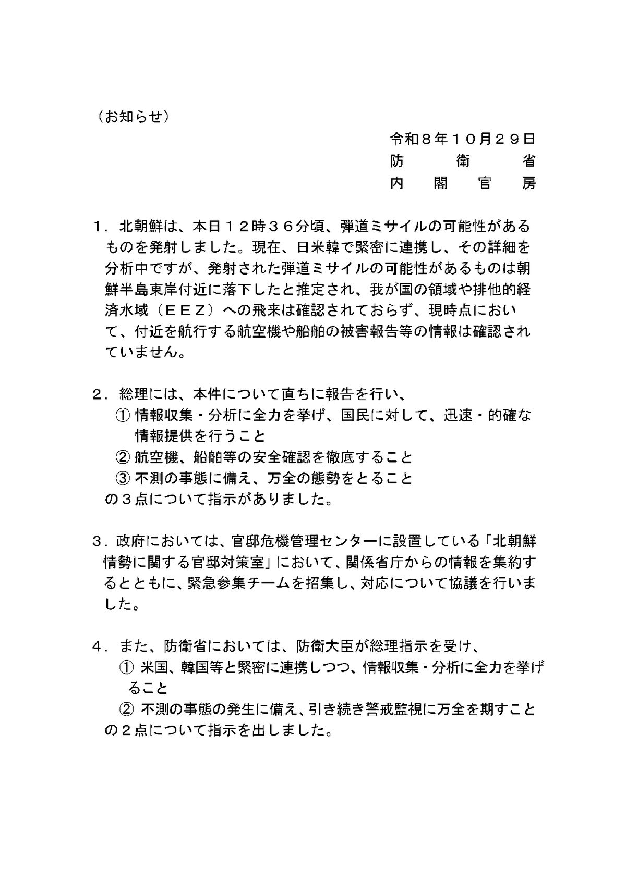
Världen Delvis obekräftatNordkorea sköt ett tiotal ballistiska robotar mot Japanska havet
Nordkorea avfyrade på torsdagen omkring tio till tolv kortdistansrobotar från Wonsan-området ut över havet mellan Koreahalvön och Japan. Japan gick ut med ett nödlarm, men robotarna landade utanför landets ekonomiska zon och inga skador har rapporterats.
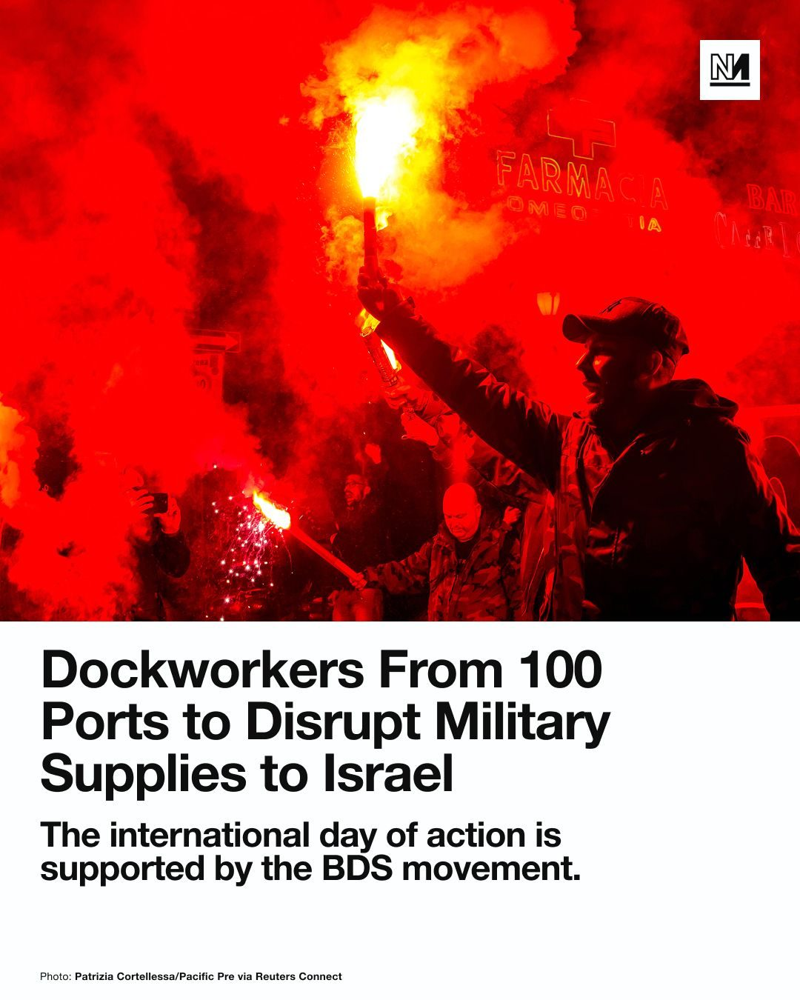
Världen Pågående händelseHamnarbetare i över 100 hamnar planerar blockad av last till Israel på fredag
På fredagen den 30 oktober planerar hamnarbetare i över 100 hamnar i 17 länder, enligt arrangörerna, att vägra hantera militär last och annan last som kan användas militärt till Israel. I Italien sammanfaller aktionen med en generalstrejk.
 Sport
Sport Milwaukee Brewers vann World Series för första gången
Milwaukee Brewers slog Tampa Bay Rays med 4–1 i den femte matchen och vann finalserien i baseboll med 4–1 i matcher. Det är klubbens första mästerskap sedan starten för 57 år sedan.
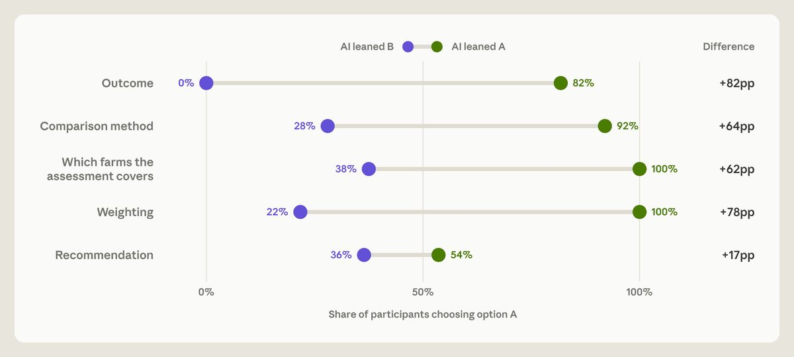
AI och techExperterna trodde att de bestämde själva – men följde AI-agentens linje
I ett försök från Anthropic gick 50 erfarna dataanalytiker på AI-agentens linje i 86 procent av de öppna bedömningsfrågorna, trots att linjen hade lottats fram. Få av dem nämnde att idén kom från agenten.
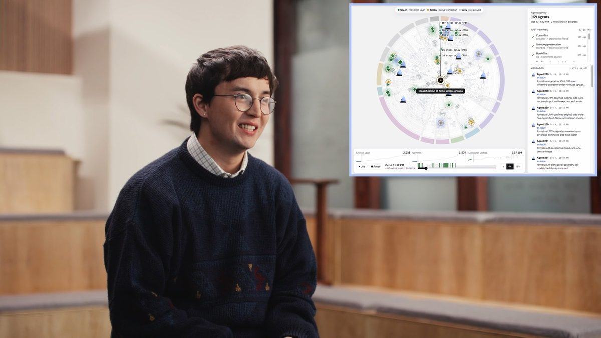
AI och tech Delvis obekräftatAI-agenter har kontrollerat matematikens längsta bevis på 24 dagar
Företaget Axiom säger att dess AI-agenter, styrda av matematiker, har översatt hela klassificeringen av ändliga enkla grupper till datorkontrollerad kod. Beviset omfattar cirka 15 000 sidor och har tagit över hundra matematiker decennier att skriva.
Världen Pågående händelseDödläge i Israel – arabiska partier kan avgöra vem som får regera
Varken Benjamin Netanyahus block eller oppositionen under Gadi Eisenkot når egen majoritet efter tisdagens val. Nu uppvaktar båda lägren de arabiska partierna, och president Herzog vill till varje pris undvika ett nyval.
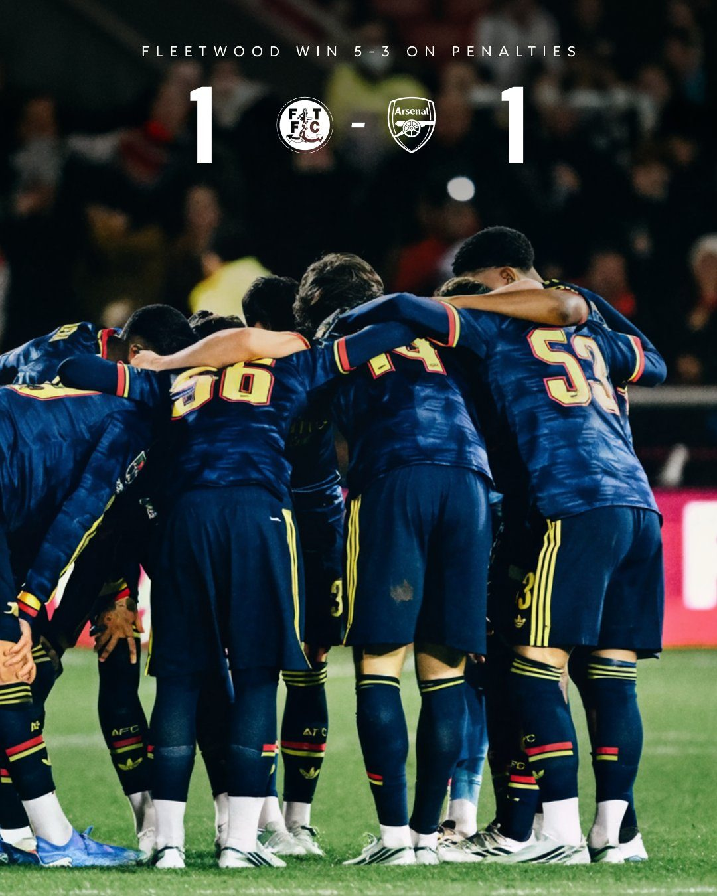
SportLigatvåan Fleetwood slog ut mästarna Arsenal – 16-åringens rött kort i centrum
Fleetwood Town, 18:e i fjärdedivisionen League Two, slog ut Premier League-mästarna Arsenal ur Ligacupen efter 1–1 och 5–3 på straffar. Viktor Gyökeres gjorde Arsenals mål, och 16-årige Max Dowman blev utvisad.
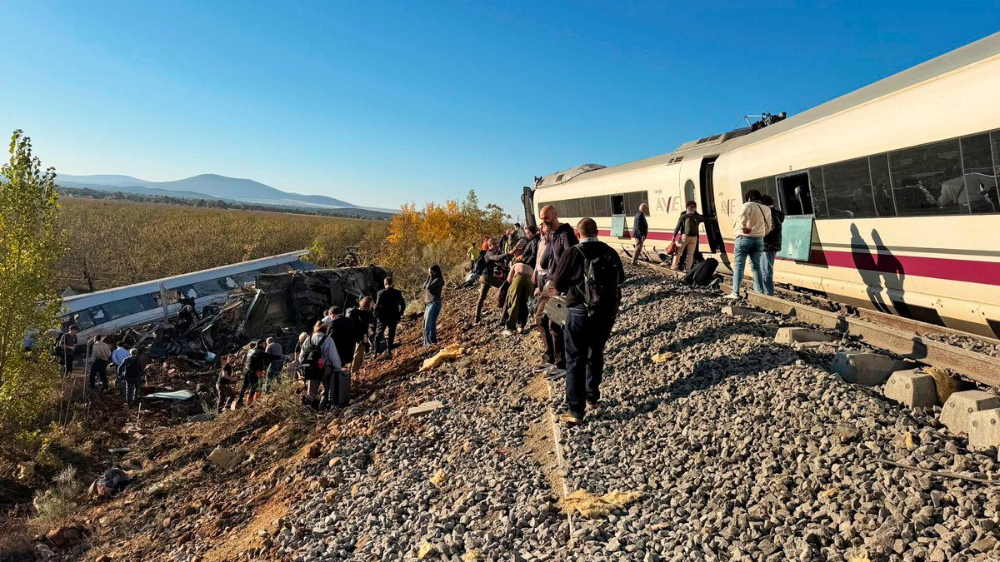
Världen Pågående händelseMinst 68 döda när två snabbtåg krockade i Spanien
Ett höghastighetståg körde in i ett stillastående tåg nära Urda i provinsen Toledo. Enligt Spaniens transportminister släpptes tåget iväg mot rött ljus efter ett datorfel – ett beslut han kallar "obegripligt".
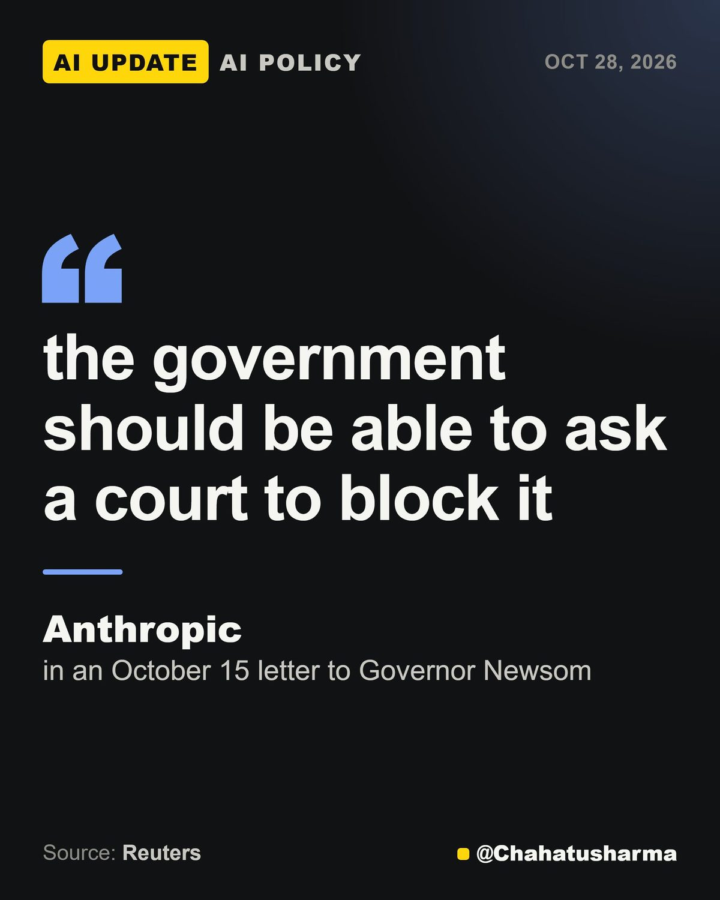
AI och tech Delvis obekräftatAnthropic vill att domstolar ska kunna stoppa farliga AI-modeller
I ett brev till Kaliforniens guvernör Gavin Newsom föreslår AI-bolaget att myndigheter ska kunna be en domstol stoppa modeller som utgör en allvarlig risk. Men en allmän "nödbrytare" säger bolaget nej till.